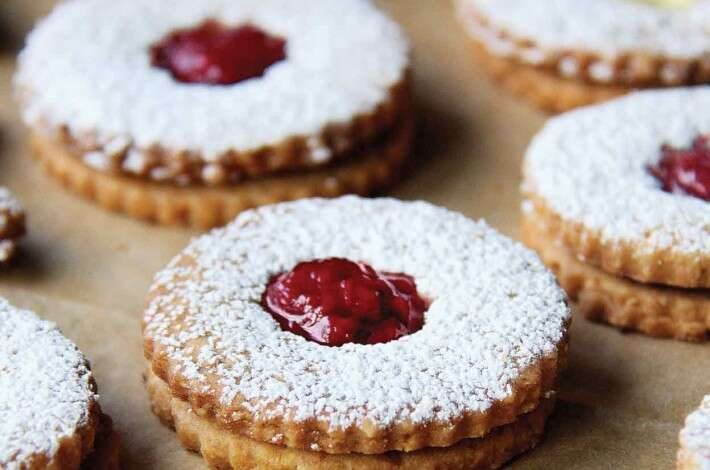

Linzer Cookies

Description
Nothing could be more festive on the holiday table than a tray of these, buttery, confectioners' sugar-dusted, jam-packed cookies.
The hint of lemon in the dough nicely complements any number of fillings, from raspberry jam to lemon curd.
Ingredients
- 12 tablespoons (170g) unsalted butter, softened
- 1/2 cup (99g) granulated sugar
- zest (grated rind) of 1 lemon or 1 teaspoon cinnamon
- 1 large egg yolk
- 1 teaspoon King Arthur Pure Vanilla Extract
- 1 1/3 cups (160g) King Arthur Unbleached All-Purpose Flour
- 3/4 cup (72g) King Arthur Almond Flour
- 1/4 teaspoon fine sea salt
- raspberry jam or lemon curd, for filling
- confectioners' sugar, for dusting
Steps
- To make the dough: Beat the butter, sugar, and zest (or cinnamon) until light and fluffy, scraping the bowl as needed, about 3 minutes. Add the yolk and vanilla and beat until combined.
- Meanwhile, whisk together the flour, almond flour, and salt. Add the flour mixture to the egg mixture and mix until just combined. Don't over-beat.
- Divide the dough in half, and pat each half into a disc. Wrap in plastic wrap, and refrigerate until firm, about 1 hour.
- To assemble: Remove the dough from the refrigerator, and let it soften for 5 to 10 minutes, until it feels soft enough to roll. It should still feel cold, but shouldn't feel rock-hard. On a floured surface, roll one disc of dough out about 1/8"-thick. Using a 2 1/2" round cookie cutter, cut out cookies. Transfer rounds to a parchment-lined baking sheet. Gather the scrap dough, roll, and repeat. If at any time during this process the dough becomes sticky and hard to work with, simply refrigerate it for about 20 minutes, until firm.
- Place the cut cookies (you should have 15 cookies) in the refrigerator for 30 minutes and preheat the oven to 350°F.
- While the first half of cookies is chilling, cut 15 rounds from the remaining dough. Once you've transferred these cookies to a baking sheet, use your smallest cookie cutter or the end of a round piping tip to make a peekaboo cutout in the center of each. Place cookies in the refrigerator for 30 minutes to chill.
- To bake: Bake all of the cookies for 12 to 15 minutes, or until the edges are just beginning to turn brown. Let them cool for 5 minutes on the pan, then transfer to a rack to cool completely.
- To fill the cookies: Place the cookies with the holes in them on a cookie sheet and sift confectioners' sugar over the top. Turn the remaining cookies flat side up and spoon 1/2 teaspoon of jam or lemon curd into the center, spreading it slightly. Top with the sugar-dusted cookies.
- Storage information: Store filled cookies, well wrapped, at room temperature (when filled with jam) or in the refrigerator (if filled with curd) for several days; freeze for longer storage.
Source
https://www.kingarthurbaking.com/recipes/linzer-cookies-recipe